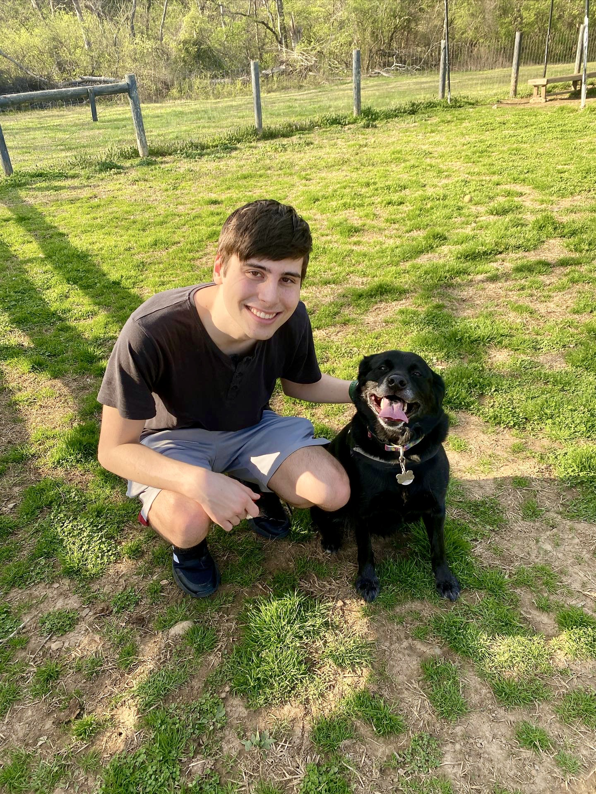

About Me
I am an undergrad student at the University of Kentucky seeking an eventual doctorate in Linguistics! My interests are in historical linguistics, phonology, and sociolinguistics, among others. Below are main specialties:
- I am most interested in historical linguistics and phonology... I particularly love proto-language reconstruction!
- I focus primarily on the Mande languages and Niger-Congo languages, as well as Arawakan, Muskogean, and Natchez languages of the Americas.
- I'm involved in research surrounding the Mande languages and their potential external relationships, the extinct Taino language, and the classification of Natchez. I also dabble in conlanging!
My Journey
I went to high school in Nashville, Tennessee at the private Father Ryan High School. Currently, I'm enrolled as a senior undergrad at UK, and plan to earn my doctorate in linguistics here at UK.
My Current Projects
My latest research has been on the Mande languages, a language family of West Africa, but I also love researching Indigenous languages. Some examples of my projects include:
- An evaluation of the relationship between the Mande languages and the Atlantic-Congo languages
- An in-progress reconstruction of the Proto-Mande language, specifically its phonology
- A comparative analysis of Natchez with several Muskogean languages
- A historical analysis of the Taino language and other Ta-Arawakan languages
Contact
You can email me at casm251@uky.edu with any questions or comments! You can also visit the link to my GitHub repo: https://github.com/caseys1122-spec/caseys1122-spec.github.io.git